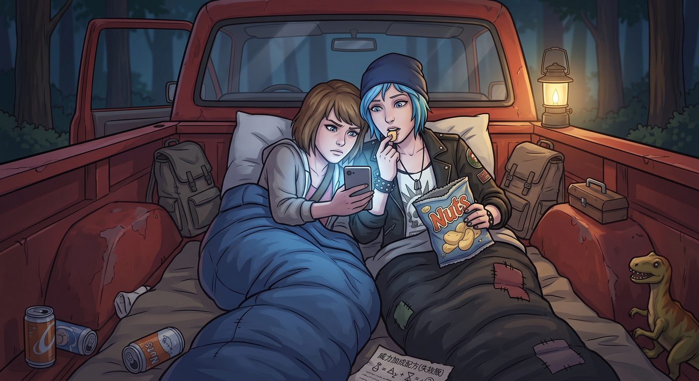

滔天暗示

一、意外刷到的歌
露營第二晚,兩人窩在皮卡後斗的睡袋裡,靠著微弱的手機訊號漫無目的地滑著影片。Chloe 一邊嚼著薯片,一邊隨手點開一個演算法推薦的陌生連結。
前奏一下,是一種她從沒聽過的語言——帶著獨特的聲調起伏,吉他編曲卻意外地扎實。
「等等,」Chloe 挑眉,湊近螢幕,「這唱的是哪國語言?香港?廣州?」她頓了頓,一臉茫然又帶著點驚喜,「雖然老娘一個字都聽不懂,但這旋律和編曲——該死,居然比 Blackwell 那幫裝腔作勢的獨立樂隊寫得好聽一萬倍。」
她點開自動翻譯字幕,螢幕上跳出斷斷續續、帶著翻譯腔的英文字句——大意是「如果命運注定要寫下終點,我寧願撕碎規則,陪你走過深淵」。
Chloe 吹了聲口哨,拿手肘撞了撞 Max 的肩膀:「看啊 Maxine,在地球另一端、幾萬公里外,居然有人用我們完全聽不懂的語言,寫了一首聽起來像是專門獻給妳這個『時空恐怖分子』的輓歌。」
Max 沒有接話,眼睛死死盯著螢幕。
二、窒息的共鳴
畫面切換,MV 裡出現一段昏暗的走廊、一聲槍響的音效——
Max 的手指瞬間收緊,死死攥住了睡袋邊緣。
畫面很快又切換了,轉到黑白色調的葬禮場景,一隻藍色的蝴蝶,緩緩振翅,從棺木上方飛過。
Chloe 的呼吸猛地一滯。
「等等,」她的聲音有點抖,伸手按住 Max 的手腕,示意先別划走,「倒回去一點。」
Max 依言把進度條往回拖了幾秒,兩人一起盯著螢幕,看著那隻畫質略顯粗糙、卻精準戳中某個記憶開關的動畫蝴蝶,一次又一次地重複振翅、飛過棺木、消失在畫面邊緣。
「這……」Chloe 的聲音很輕,「跟我們在 Rachel 墓前看到的那隻,顏色一模一樣。」
「巧合嗎?」Max 也有點恍惚。
「我不知道,」Chloe 搖搖頭,目光卻依然黏在螢幕上,「但這種巧合,已經多到讓人沒辦法只當它是巧合了。」
兩人沉默地又把那幾秒鐘重播了一次,誰都沒有催著往下看,任由那隻虛擬的蝴蝶,在螢幕裡一遍一遍,靜靜地飛過。
過了許久,Max 才輕輕按下播放鍵,讓 MV 繼續往下走——懸崖邊的暴雨畫面裡,兩個模糊的身影,在雷聲中緊緊相擁。
Max 的手開始微微發抖。
那些跨越時空的記憶碎片——無數次失敗的回溯、暗房裡的窒息感、風暴前那個不能回頭的選擇——彷彿全部被這段陌生語言的旋律,重新串聯了起來。
字幕滾動到副歌:「就算世界沉沒,仍想護你一次。」
Max 盯著螢幕,眼眶毫無預警地泛紅,聲音輕得像是自言自語:「原來……在別人的宇宙裡,這場風暴,永遠沒有停過。」
三、收起嬉笑
Chloe 察覺到她的異樣,原本掛在臉上的調侃笑意,一點一點收了起來。
MV 播到最後,畫面定格在一輛老皮卡衝出廢墟、兩人重逢相擁的畫面,和一個模糊卻溫柔的吻。
Chloe 忽然伸手,按滅了 Max 手裡的手機螢幕。
她沒有說任何調侃的話,只是把 Max 的腦袋輕輕按進自己的頸窩,任由冷冽的湖風灌進睡袋的縫隙,感受著懷裡那具身體微微顫抖的溫度,和滴落在自己鎖骨上的、溫熱的眼淚。
「聽到了嗎,書呆子。」她的聲音有點沙啞,低頭吻著 Max 的髮頂,「幾萬里外,居然有人替我們記住了那場風暴。」
Max 吸了吸鼻子,伸手緊緊環住她的腰,聲音悶悶地從她頸窩裡傳出來:「……」
「但最重要的是,」Chloe 繼續說,語氣裡帶著一種近乎篤定的溫柔,「老娘現在就在這裡,被妳這個破睡袋裹得滿身大汗,而且哪兒都不會去。」
Max 終於破涕為笑,抬起頭,眼眶還泛著紅,卻帶著失而復得般的笑意。
「Chloe,」她吸了吸鼻子,聲音裡帶著一絲哽咽後的鬆快,「把剛才那首歌,加進車載播放清單裡吧。」
「妳聽得懂?」
「一個字都聽不懂,」Max 笑著搖頭,靠回她懷裡,「但下次開長途公路的時候,我想聽著它看日落。」
海浪一下一下拍打著遠處的礁石,篝火早已熄滅成一堆餘燼。皮卡車斗裡,兩具交疊的身影,在冷冽的夜風中,安靜地擁抱著彼此,還有那段來自遙遠他方、卻精準擊中了她們靈魂的、陌生語言的旋律。
某種意義上,這是一張來自世界另一端的存在證明——告訴她們,那場她們拚了命換來的、關於愛與抗爭的故事,早已在她們看不見的地方,留下了不可磨滅的回響。